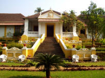
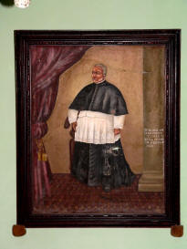
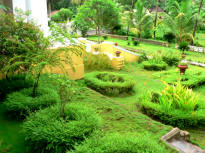
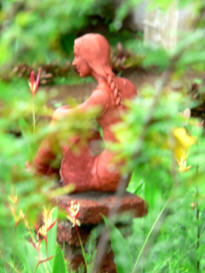

| |
The Palácio do Deão is situated, 14 km from Margao, on the
banks of the wildly beautiful Kushavati River in the Taluka
of Quepem.
A Palatial house, it occupies 11,000 sq ft of floor area. It
is built in an unusual style of architecture and has an
interesting blend of Hindu and Portuguese cultures.
Also outstanding are its lush gardens that have still
managed to preserve their historical features and have,
since old times, been known as the most beautiful pleasure
gardens in Goa.
The gardens, with features such as a pond, loggia,
balustrades, vases, stone ornaments, and a belvedere tell us
of a complex garden, unparallel in Goa.
Quepem, part of the new conquests was incorporated in Goa
along with the territories of Ponda, Zambaulim, Canacona,
Paroda, Mulem and the Fortress of Cabo de Rama only in 1782,
in an agreement signed between the Portuguese and the Rei of
Sundem.
The Palácio do Deão was built in 1787, by a Portuguese noble
man, who was Dean of the Church and the Founder of Quepem
town. The house situated on a hillock, faces the Church he
built.
He established, at his own expense, a public market,
hospital, Church and other facilities for the benefit of the
inhabitants, as inscribed on the pyramidal structure in the
churchyard.
The Deão, Jose Paulo, arrived in Goa in 1779 along with the
Archbishop, Dom Frei de Santa Catarina, famously known as
the barefooted friar, who died in the Palácio do Deão and
whose mortal remains are in the Church of Quepem.
On the death of Archbishop Manuel de S. Galdino, in absence
of a new Archbishop, he governed the archdiocese from July
1831 up to 1835.
In 1829, he presented the Palácio do Deão to the Viceroys of
India-Portuguese, for their recreation, so that they may
protect the estate and institutions he had founded. . The
Conde de Torres Novas (Antonio Vasconcelos Correia) and the
Conde de Sarzedas (Bernado J.de Lorena) are some of the
Viceroys who spent their holidays here.
The Deão died on the 10thJan.1835, after spending 55 years
in Goa, and is buried in the Se Cathedral in front of the
altar of N. S. da Dores, the image of which has been
transferred from His Palácio do Deão to the Se.
It has been restored and opened for the public.
With its rich history, unique architecture, art and
artifacts, it is a showcase of Goan culture and tradition
depicting the lifestyle of the past.
Visitors can enjoy Indo-Portuguese cuisine on the belvedere,
overlooking the Kushavati River.
Its extensive gardens and location on the banks of the river
make it an interesting place to observe birds and other
wildlife.
|



 |